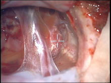
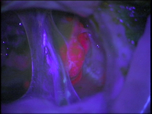
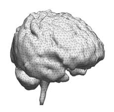

Research Projects
The two main projects of the Brain Research Group @ Dartmouth are the: 1) fluorescence-guided resection NIH R01 funded project and 2) brain deformation modeling and updating NIH-funded project. The principal objective of both projects is to provide the neurosurgeon with improved surgical guidance technologies.
About the Lab
The Brain Research Group @ Dartmouth consists of clinicians, engineers, computer scientists, and basic scientists from various departments and schools at Dartmouth, including Dartmouth Medical School, Thayer School of Engineering, and Dartmouth Hitchcock Medical Center. Please find below an overall summary and description of both projects.
Fluorescence-Guided Resection
Over the past decade, following the pioneering work of Dr. Walter Stummer and colleagues, 5-aminolevulinic acid (ALA)-induced protoporphyrin IX (PpIX) fluorescence guided resection has been gaining appeal and excitement in the neurosurgical community as an real-time intraoperative guidance tool in the contemporary neurosurgical armamentarium for resection of gliomas.

Intraoperative images on a patient undergoing fluorescence-guided resection using ALA-induced PpIX fluorecence. (Left) White light image, and (Right) blue light excitation image, with tumor regions displaying a bright red-pink PpIX fluorescence. Our fluorescence-guided resection project is dedicated at exploring the role of ALA-induced PpIX as an adjuvant surgical guidance technology in the resection of brain tumors with the main objectives of this project including, but not limited to developing improved detection technologies for fluorescence guided resection - both quantitative and depth resolved technologies; elucidating on the targeting capabilities of PpIX as a brain tumor biomarker across a range of tumor histologies; and exploring the role of ALA-induced PpIX coregistered with MR imaging image guidance as a real-time intraoperative feedback surgical guidance tool. More... |
Brain Deformation Modeling and UpdatingImage-guidance using pre-operative MR images is a powerful tool used by surgeons to help guide them during surgery to localize the lesion of interest. Nevertheless, a major problem with this approach involves the loss of navigational accuracy as a result of intraoperative brain shift and deformation.  3 dimensional tetrahedral brain mesh of a patient undergoing brain tumor resection. Over the past decade, our group has been dedicated at addressing this problem of intraoperative brain shift and deformation using biomechanical models of brain deformation. Basically, intraoperative data feeds into a biomechanical model of the brain, which is then used to calculate on a voxel by voxel basis the tissue displacement that has occurred. The displacement data is then used to 'warp' and thus update the pre-operative MR images, and as such, providing the surgeon with an updated 3-dimensional view of the surgical field. More... |